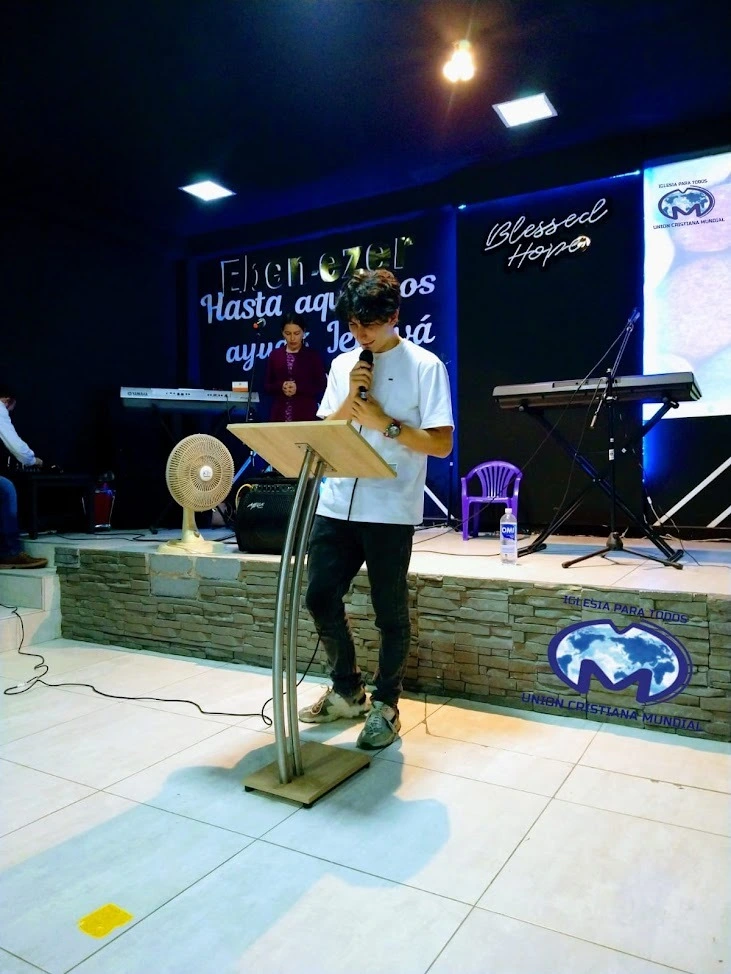
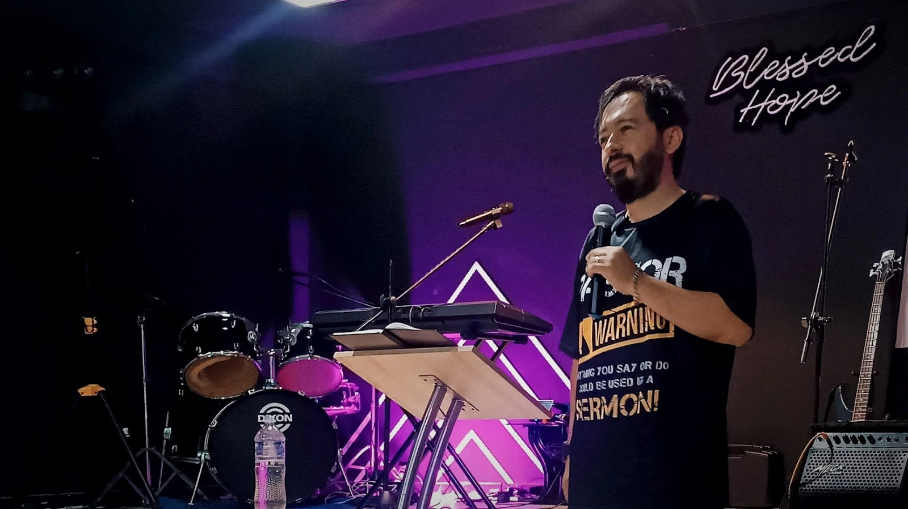
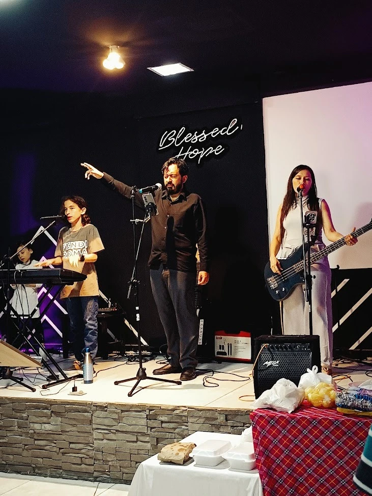
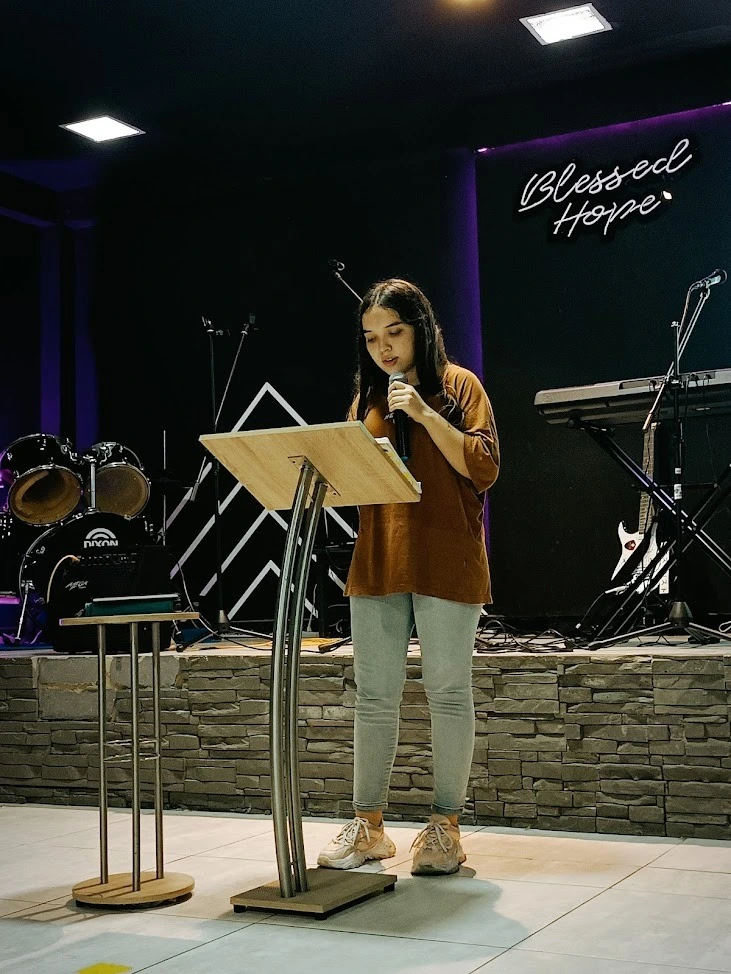
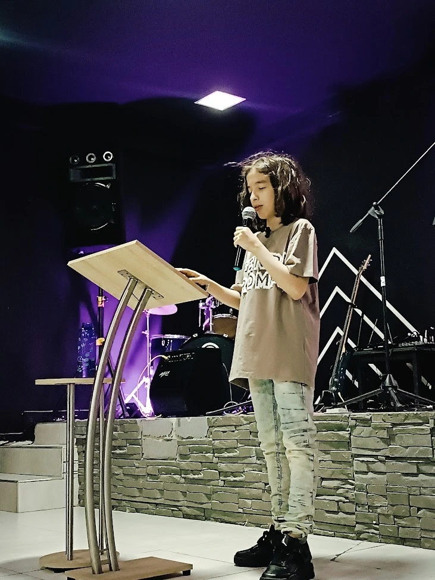
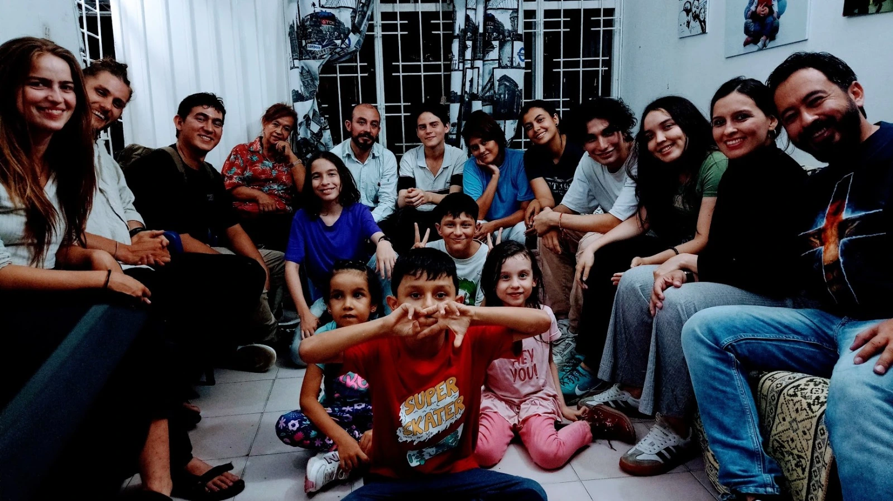

Ubicación
Domingos 4:00PM
Culto dominical
Somos Familia UCM






Redes Sociales
Dios nos ha dispuesto como herramientas para llevar a cabo su obra, por ello, estamos para brindarte apoyo en tu vida espiritual y en tu caminar con Dios. A continuación encontrarás nuestros medios digitales de contacto:
¡Síguenos en nuestras transmisiones por Facebook, y no dudes en contactarnos si lo necesitas, estamos para ayudarte!
¡Puedes escribirnos a nuestros números de contacto si necesitas consejería, oración, o algún otro apoyo espiritual que te podamos brindar!